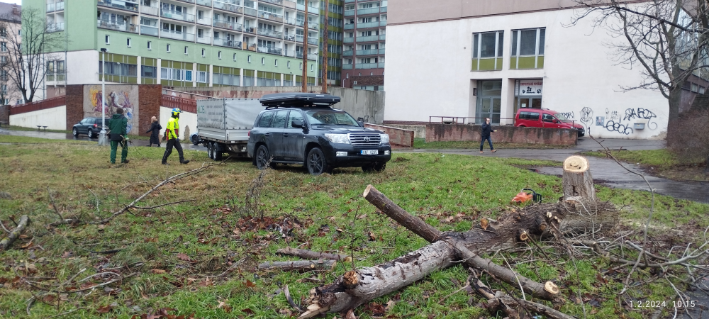
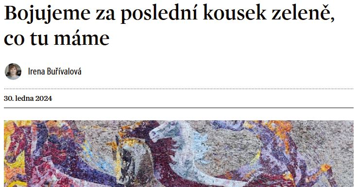
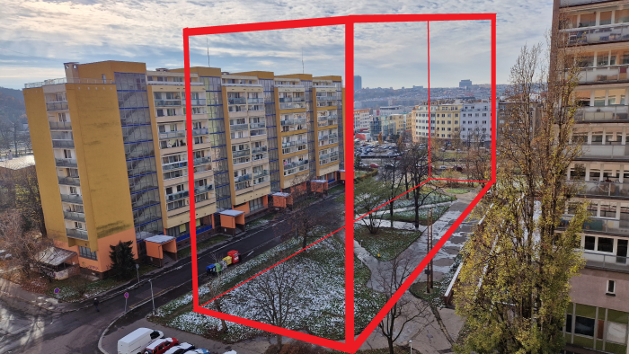
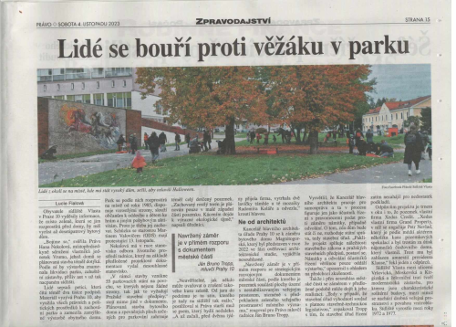
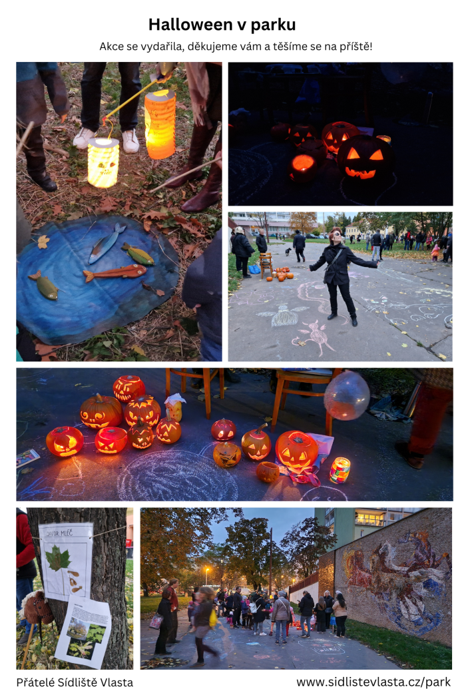
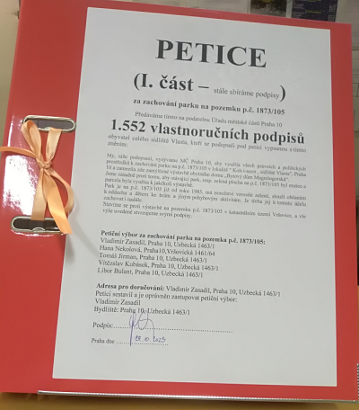
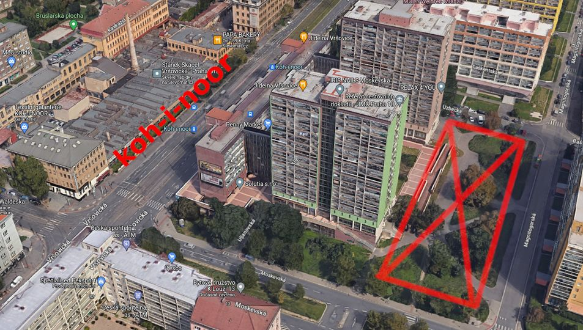

-
Nepovolené kácení zeleně v parku!
1. 2. 2024
Dne 1. 2. 2024 v 10:00 se začaly z parku ozývat zvuky pilování dřeva. Bdělí sousedé šli ihned do protiakce, zavolali policii a upozornili na dění radnici Prahy 10. Dřevorubci tak měli témeř od začátku své činnosti společnost. Místní obyvetelé se zde postupně scházeli, ptali se, co se děje a řešili situaci. Cca za hodinu dorazila zástupkyně stavebního odboru z radnice a činnost dřevorubců společně s policií zastavila. Dřevorubecká firma neměla na kácení dřevin povolení. Dle informací se prý snažila "omladit" park. My se však domníváme, že šlo o snahu poškodit co nejvíc zeleně, aby nebylo co chránit. Situaci budeme dále hlídat.

-
Článek v magazínu Reportér
30. 1. 2024
Opět se o nás píše :)
odkaz na článek

-
Xedus žádá o prodloužení termínu dodání podkladů pro zahájení územního řízení
15. 1. 2024
Stavební odbor MČ Praha 10 už do dvou dnů od žádosti vyhovuje majiteli pozemku a posouvá termín na 31. 12. 2024. Je zajímavé, že tímto směrem komunikace funguje bez problému. Na stavebním odboru o našich aktivitách údajně nevěděli, což je ve světle událostí posledních měsíců poněkud tristní. Stavební odbor o nás musel vědět od října 2023 viz níže "Možnost nahlédnout do dokumentace projektu".
-
Usnesení zastupitelstva městské části Praha 10
18. 12. 2023
Na základě naší petice, která čítá cca 2000 podpisů a na základě vystoupení a přítomnosti mnoha občanů naší iniciativy na zastupitelstvu zde bylo odhlasováno, že "Zastupitelstvo městské části Praha 10 podporuje úsilí o zachování veřejného prostranství na parc. č. 1873/105". Jsme rádi i za toto málo, každopádně jsme očekávali větší iniciativu ze strany radnice. Pirátská strana se snažila protlačit větší podporu, vládnoucí zastupitelé se bohužel k žádné konkrétní činnosti v náš prospěch zavázat nechtěli a návrh Pirátů neodhlasovali. Nám nezbývá, než vrtět hlavou nad tím, proč jsme byli vtaženi do politického boje. Radnice by ve věci zachování zeleně měla být jednotná.
Zápis z 6. zasedání Zastupitelstva městské části Praha 10 konaného ve dnech 18. – 19. 12. 2023
-
Pojďme si zopakovat, oč tu běží ...
30. 11. 2023
Obyvatelé sídliště Vlasta nestojí o prvenství "desetipatrové obytné budovy s nejmenším vzájemným odstupem od sousedních obytných budov v Praze". Dále si nepřejí vykácení zeleně, rozšíření tepelného ostrova na celou oblast Vršovická - Moskevská - Baškirská - Taškentská a stín ve svých bytech. Nákres plánované situace ukazuje velmi necitlivý zásah do podoby sídliště.

PS: Omlouváme se, ale sousedské čertíky letos v parku nezvládneme, veškerou energii nyní soustředíme do boje proti výstavbě. Snad se nám podaří uspořádat sousedskou akci na Velikonoce a snad budeme mít kde. Přidejte se k nám!
-
Petice pokračuje!
13. 11. 2023
Pro velký úspěch jsme se rozhodli pokračovat ve sběru podpisů. Blížíme se k hranici 2000 podpisů celkem a hodláme ji překonat! Přidejte se, určitě není pozdě. Zapojte své příbuzné, kamarády i kolegy, podepsat může každý občan ČR.
Papírová petice k tisku a podpisu
ONLINE petice k podpisu bankovní identitou
-
Park Magnitogorská v Právu
4. 11. 2023
Píše se o nás...

-
Veřejný prostor i zeleň na sídlišti potřebujeme
31. 10. 2023
Park Magnitogorská je ideálním a dost možná jediným vhodným místem na sídlišti k pořádání větších srazů a sousedských akcí. Vyzkoušeli jsme si, že to funguje skvěle. Na Halloween jsme zde uspořádali sousedskou akci s hrami (nejen) pro děti a rozsvěcení dýní. Moc jsme si akci užili a chystáme se na další. Kdo tuší čerty, tuší správně.

-
První várka papírové petice předána na ÚMČ Praha 10
29. 10. 2023
Petiční výbor předal na podatelnu ÚMČ Praha 10 velký šanon s 1552 podpisy občanů v níž vyzývá MČ Praha 10, aby využila všech právních a politických prostředků k zachování parku na p.č. 1873/105 v lokalitě "Koh-i-noor, sídliště Vlasta", Praha 10 a zamezila zde zamýšlené výstavbě obytného domu "Bytový dům Magnitogorská." Děkujeme všem zúčastněným za podporu!

-
Možnost nahlédnout do dokumentace projektu
10. 10. 2023
Majitelé bytů sousedících s parkem Magnitogorská (=účastníci řízení) mohou nahlédnout do dokumentace, kterou XEDUS CREDIT s.r.o. dodal na úřad ÚMČ Praha 10 v rámci své žádosti o vydání územního rozhodnutí. Kontaktní osobou je paní Ing. arch. Eva Langová. Vzhledem ke stěhování úřadu směřujte své návštěvy spíše na listopad.
-
Pravidelné setkávání a 1000 podpisů
8. 10. 2023
Byla překročena hranice 1000 podpisů petice celkem (papír + online). Zároveň jsme se jako zainteresovaní občané poprvé setkali osobně a plánujeme v setkávání pravidelně pokračovat. Připojte se k nám ve Facebookové skupině Přátelé Sídliště Vlasta.
-
Petice proti výstavbě v parku Magnitogorská
22. 9. 2023
Petici můžete podepsat v papírové podobě, nebo online až do 9. 11. 2023.
Papírová petice k tisku a podpisu
ONLINE petice k podpisu bankovní identitou

-
ÚMČ Praha 10 pozastavuje řízení o vydání územního rozhodnutí
18. 9. 2023
Úřad vyzval XEDUS CREDIT s.r.o. k doplnění nedostatků žádosti do 31. 1. 2024.
Výzva
-
XEDUS CREDIT s.r.o. žádá ÚMČ Praha 10 o vydání územního rozhodnutí
16. 8. 2023
Info od ÚMČ Praha 10
-
Nesouhlasné stanovisko Odboru životního prostředí ÚMČ Praha 10
12. 5. 2023
Info od ÚMČ Praha 10
-
Souhlasná stanoviska ke stavbě od Magistrátu hlavního města Prahy
24. 4. 2023
Dokumenty
-
XEDUS CREDIT s.r.o. plánuje výstavbu místo parku Magnitogorská
18. 3. 2022
Info od ÚMČ Praha 10
Příloha odpovědi - Předběžné vyjádření hlavní kanceláře architekta
-
Soudní spor XEDUS CREDIT s.r.o. vs ÚMČ Praha 10
21. 5. 2020
XEDUS CREDIT s.r.o. uplatnil na MČ Praha 10 nárok na úplatu
kompenzující omezení svých vlastnických práv z důvodu užívání vlastního pozemku okruhem široké
veřejnosti z titulu existence veřejného prostranství. Jedná se o částku 1.792.800,- Kč s přísl. (úrokem z prodlení), nárok byl vznesen za sazbu 120 Kč/m2/rok.
Info od ÚMČ Praha 10
{kind=link}
{kind=link}
{kind=link}

{kind=link}